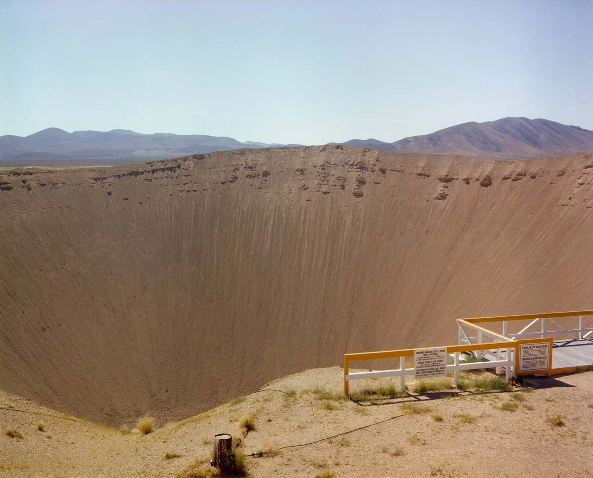
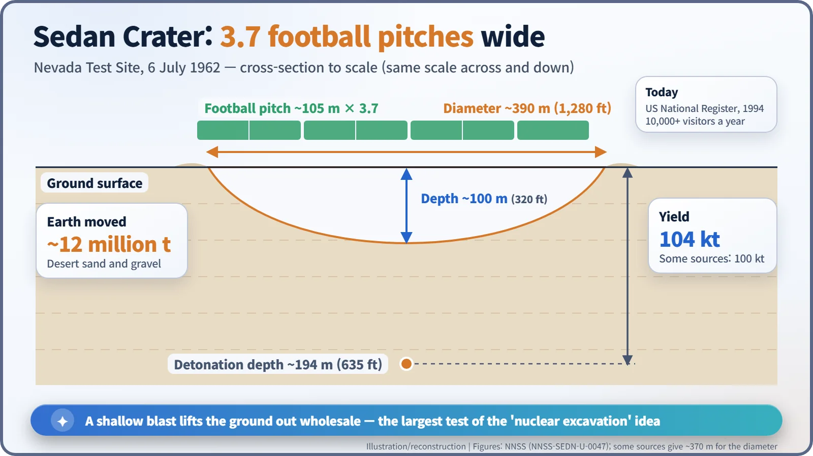
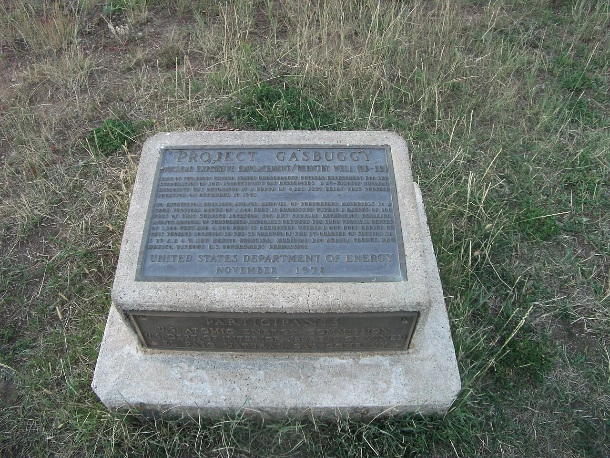
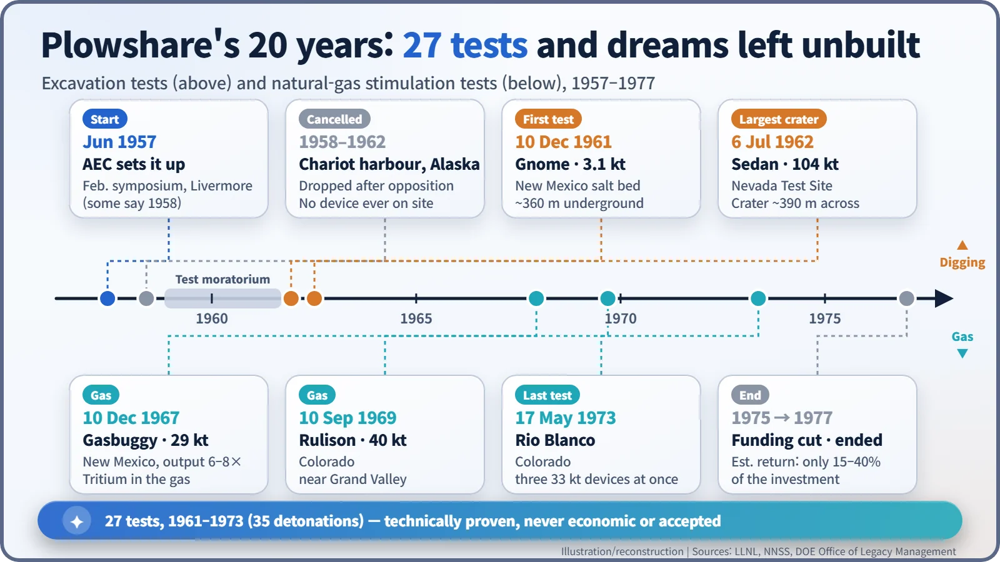

Nuclear History · 200
Moving Mountains with the Atom — Project Plowshare and the Dream of Peaceful Nuclear Explosions (1957–1977)
Twenty years, 27 tests and a 390-metre crater: technically possible, never economic or accepted.
Project Plowshare (1957–1977) was the United States' attempt to use nuclear explosions as construction tools: to dig harbours and canals and to free natural gas from tight rock. Between 1961 and 1973 it carried out 27 tests, including the Sedan shot that left a crater about 390 metres wide. Radioactive fallout and gas, poor economics and public opposition meant none of it ever went into practical use.
A crater no meteorite made
In the middle of the Nevada desert there is a small viewing platform with a yellow railing. Beyond it the ground falls away into a bowl about 390 metres across and about 100 metres deep. Line up three and a half football pitches end to end and they would still not reach the far rim. More than 10,000 visitors a year come to stand at its edge. No meteorite made it. People did, in 1962, while testing whether nuclear explosions could be used to dig. This is Sedan Crater. [5]

Swords into plowshares
The programme took its name from the Book of Isaiah: "they shall beat their swords into plowshares, and their spears into pruninghooks". A plowshare is the cutting blade of a plough. The idea was to take the power built for weapons and use it like a farm tool. [2]
The backdrop was President Eisenhower's "Atoms for Peace" speech to the United Nations on 8 December 1953. If reactors could make electricity, why not use the enormous energy of a nuclear explosion to move earth? In 1956 Harold Brown (1927–2019), later director of the Livermore laboratory, proposed a symposium on the subject. It met at Livermore in February 1957, and in June 1957 the US Atomic Energy Commission (AEC) set up the Plowshare Program. Some official histories date its public announcement to 6 June 1958. [1] [4]
The wish list was ambitious. By the end of 1958, Livermore's director Edward Teller (1908–2003) had outlined harbours in Alaska, a canal across the Alaska Peninsula, a channel through a Pacific reef, and oil extraction from tar sands and oil shale. [4]
In a salt bed, then in the desert
A test moratorium that began in 1958 halted everything for almost three years. Plowshare finally began with Gnome on 10 December 1961. In a thick salt bed near Carlsbad, New Mexico, about 360 metres (1,200 feet) underground, a 3.1-kiloton device (energy equal to 3,100 tonnes of TNT) was detonated. It left a cavity about 21 metres high and 50 metres across. Researchers also looked at whether the trapped heat could be drawn off as steam to generate electricity. [1] [4]
Then came Sedan, on 6 July 1962. A 104-kiloton device (some sources say 100) was set off about 194 metres (635 feet) down in the desert sand and gravel of the Nevada Test Site. It moved about 12 million tonnes of earth. The principle is simple: an explosion at the right shallow depth throws the overlying ground up and out, leaving a bowl. Get the depth right and you can, in theory, dig as much as you like. [2] [5]

But a test site is not a building site. The ejected soil carried radioactive material, and dust from Sedan drifted east beyond the test site, with fallout detected in several Midwestern states. Digging a real canal would have meant dozens of blasts like this one. [8]
A harbour stopped in Alaska, and gas that no one wanted
The first real construction candidate was a harbour at Cape Thompson in north-west Alaska, Project Chariot. The site was chosen in 1958, and between 1959 and 1962 more than 40 environmental studies were carried out there. But the Iñupiat village of Point Hope, 32 miles away, along with some scientists, worried about the animals and fish that local people hunted, and they pushed back hard. According to the US Department of Energy, the AEC cancelled the work because "the public strongly opposed it". No nuclear device was ever brought to the site. Some historians see the protest as an early chapter in the American environmental movement. [6]
What remained was the hope of coaxing more natural gas out of tight rock. Gasbuggy (10 December 1967, New Mexico, 29 kt), Rulison (10 September 1969, Colorado, 40 kt) and Rio Blanco (17 May 1973, Colorado, three 33 kt devices fired together) followed. Gasbuggy raised gas output six to eight times. But the gas contained tritium, a radioactive form of hydrogen, at what Livermore called an "undesirable high concentration". Who wanted that piped into their kitchen? [3] [4]

The money did not work either. By 1974 about $82 million had gone into gas stimulation. Even after 25 years of production, only 15–40% of that investment was expected to come back. Funding ended with fiscal year 1975, and the programme was formally closed in 1977. Between December 1961 and May 1973 there had been 27 Plowshare tests, made up of 35 individual detonations. [1] [4] [5]

Possible is not the same as acceptable
The Soviet Union ran its own "Nuclear Explosions for the National Economy" programme from 1965 to 1988, with about 120 explosions (122 or 124, depending on the count). In 1996 the Comprehensive Nuclear-Test-Ban Treaty banned all nuclear explosions, whatever their purpose. [7]
Plowshare showed more than once that the technology could work. What it could not overcome was radioactive gas, dust drifting beyond the fence, and people worried about their homeland. Sedan Crater was listed on the US National Register of Historic Places in 1994. It still poses the question quietly to everyone who stands at the rail. [5]